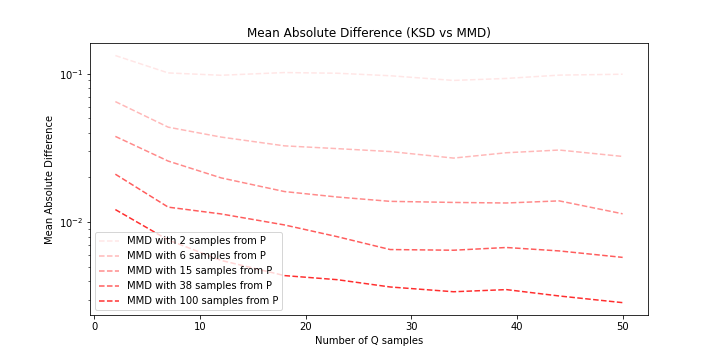
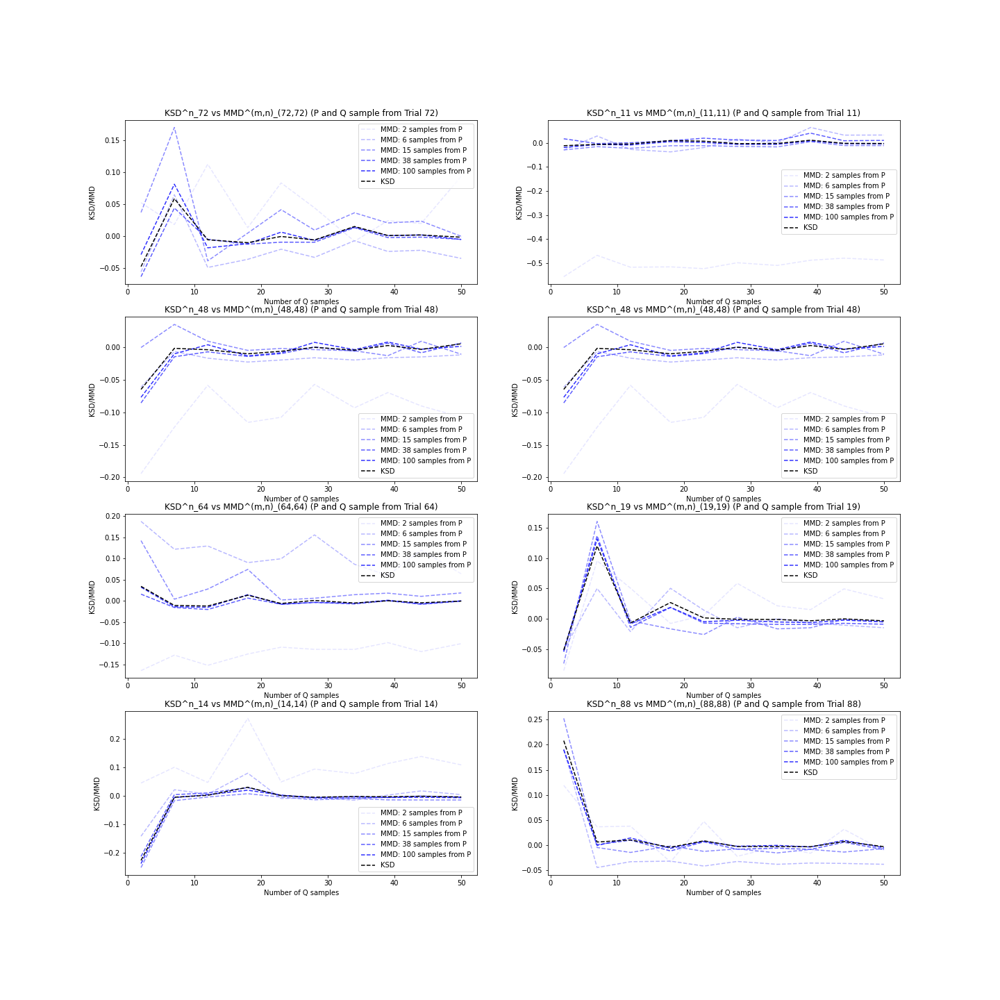
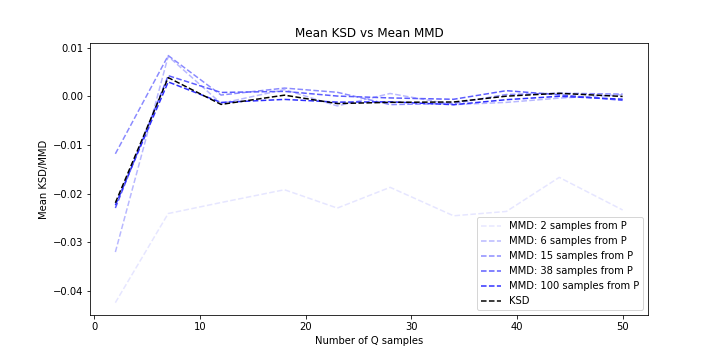
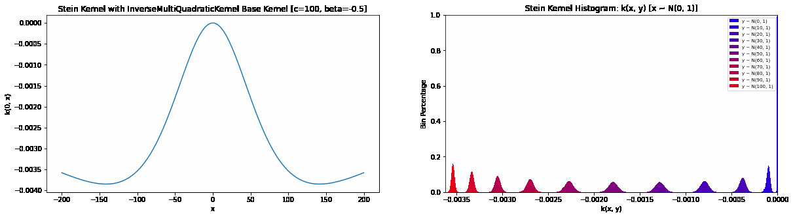

Kernel-Based Distribution Discrepancies
What is a Distribution Discrepancy?
Integral Probability Metrics
One method of comparing two distributions is with the Integral Probability Metrics, defined as:
\[IPM = \sup_{f\in F} \{ \int f(x) d \mathbb{P}(x)-\int f(y) d \mathbb{Q}(y) \}\]From the defintion of expectation, \(\mathbb{E}_{x \sim \mathbb{P}}[f(x)] := \int f(x)d\mathbb{P}(x)\), we can reformulate this to:
\[IPM = \sup_{f\in F} \{ \mathbb{E}_{x \sim \mathbb{P}}[f(x)] - \mathbb{E}_{y \sim \mathbb{Q}}[f(y)] \}\]To better understand what’s going on here, let’s unpack the expectation in this expression, \(\mathbb{E}_{x \sim \mathbb{P}}[f(x)]\). We can see that the random variable \(x\) is first subjected to some transformation \(f\) . In other words, we could define a new random variable \(z_x \sim f(x)\) , from which \(x \sim \mathbb{P}\) . With the same \(f\) we could do the same and define, \(z_y \sim f(y)\) , only \(y \sim \mathbb{Q}\) , our other distribution. So the quantity inside the supremum operator \(\mathbb{E}_{x \sim \mathbb{P}}[f(x)] - \mathbb{E}_{y \sim \mathbb{Q}}[f(y)]\) is the difference in the expectation of our new random variables \(z_x\) and \(z_y\) , which are actually the expectations of \(\mathbb{P}\) and \(\mathbb{Q}\) when these distributions are subject to some transformation \(f\) .
To compute our quantity \(\mathbb{E}_{x \sim \mathbb{P}}[f(x)] - \mathbb{E}_{y \sim \mathbb{Q}}[f(y)]\), the transformation \(f\) seems pretty important. What should \(f\) be? We know that the IPM provides some idea of discrepancy between \(\mathbb{P}\) and \(\mathbb{Q}\), so \(f\) must play a part in exposing the differences between \(\mathbb{P}\) and \(\mathbb{Q}\). For example if we chose \(f(x) = 0\), then \(\mathbb{E}_{x \sim \mathbb{P}}[f(x)] - \mathbb{E}_{y \sim \mathbb{Q}}[f(y)]\) would always be zero, which wouldn’t be very helpful for comparing our densities. So to reveal any and all the differences between \(\mathbb{P}\) and \(\mathbb{Q}\), we need to choose \(f\) in a way that maximises the quantity \(\mathbb{E}_{x \sim \mathbb{P}}[f(x)] - \mathbb{E}_{y \sim \mathbb{Q}}[f(y)]\), and this is precisely the goal of \(\sup_{f\in F}\) the supreumum operator! It indicates that we need to search through the space of all possible functions \(F\) to find this special \(f\) that will expose all of the discrepancies between \(\mathbb{P}\) and \(\mathbb{Q}\).
The \(f\) chosen by the supreumum operator has a special name called the witness function and is denoted \(f^*\). To give some intuition, we can visualise a possible witness function for when \(\mathbb{P}\) is a Gaussian and \(\mathbb{Q}\) is a Laplace distribution.
The witness function exposes the differences between the two distributions. In the figure above, the locations where \(f(x)=0\) correspond to locations where \(p(x) = q(x)\). Moreover, when \(p(x) > q(x)\), \(f(x) > 0\) and the same vice versa. This means that the transformations of \(\mathbb{P}\) and \(\mathbb{Q}\) under \(f^*\) will ensure a non-zero IPM indicating that \(\mathbb{P} \neq \mathbb{Q}\).
So far we’ve developed some intution for the IPM definition, in particular the purpose of the transformation \(f\). This seem like a promising approach to calculating a distribution discrepancy but we might be asking, how exactly do we evaluate this supremum? I mentioned for the figure above that it was only a possible witness function and this because computing the actual IPM would require a to search through all possible functions \(F\) to find our actual witness function. As you might imagine, this is not an easy task.
Maximum Mean Discrepancy
Because the kernels associated with our RKHS are in the form of expectations, from which we want to maximise their discrepancy, this formulation of the IPM is known as the Maximum Mean Discrepancy (MMD). We can define:
\[MMD = \sup_{||f||_H \leq 1 } \{ \int f(x) d \mathbb{P}(x)-\int f(y) d \mathbb{Q}(y) \}\]where our function space is restricted to the unit ball of our chosen RKHS.
It can be shown that:
\[MMD^2 = \mathbb{E}_{X, \tilde{X} \sim \mathbb{P}}[k(X,\tilde{X})]-2\mathbb{E}_{X \sim \mathbb{P},Y \sim \mathbb{Q}}[k(X,Y)]+\mathbb{E}_{Y, \tilde{Y} \sim \mathbb{Q}}[k(Y,\tilde{Y})]\]where \(k\) is a kernel associated with the chosen RKHS (see here for the derivation).
An unbiased estimate of MMD: \(\hat{MMD}^2 = \frac{1}{m(m-1)}\sum_{i=1}^{m}\sum_{j\neq i}^{m}k(x_i, x_j)+\frac{1}{n(n-1)}\sum_{i=1}^{n}\sum_{j\neq i}^{n}k(y_i, y_j)-\frac{2}{mn}\sum_{i=1}^{m}\sum_{j=1}^{n}k(x_i, y_j)\)
MNIST: The MMD
A property of the MMD is that it only requires samples from \(\mathbb{P}\) and \(\mathbb{Q}\). In other words, we don’t need to know their underlying distributions! This can be particularly useful when we aren’t read to make any assumptions about the generating process of a dataset. As an example, we can compare images from the MNIST dataset to quantify the discrepancy between digits.
We can visualise a heatmap of the MMDs for samples from different digits.

Samples from the same digit have much lower MMDs (the diagonal). We can see higher MMDs when comparing digits that are not as similar when written, such as 0 and 1. On the hand, more similar digits like 7 and 9 have lower MMDs, indicating that the distribution of 7 and 9 must be quite similar. It’s incredible that we can quantify the discrepancy between these distributions entirely from their samples.
MNIST: Choosing a better Kernel
What if we know \(\mathbb{P}\)?
The MNIST example showed us how useful the MMD can be when both \(\mathbb{P}\) and \(\mathbb{Q}\) are unknown distributions. But what if we already know the pdf of one of the distributions? In this case, sampling from the known pdf would seem like an inefficient way to calculate a discrepancy. Consider an experiment where we increase the number of samples from \(\mathbb{P}\):
We can see that as we increase the number of samples from \(\mathbb{P}\), the MMD converges to a limit. This is the Kernel Stein Discrepancy of \(\mathbb{P}\) and \(\mathbb{Q}\). When the density function of \(\mathbb{P}\) is known, the KSD provides a closed-formed expression for our MMD. This makes our discrepancy calculation exact, instead of numerically approximated with \(\mathbb{P}\) samples. It also eliminates the tedious process of sampling \(\mathbb{P}\). We will explore the KSD in detail in the next section!
Kernel Stein Discrepancies
As we saw in the last section, the KSD computes the descrepancy between a known distribution density and an unknown density that we might only be able to sample from. Before introducing the KSD let’s look at the Stein Kernel, \(k_{\mathbb{P}}\), a special kernel formulation.
Stein Kernels
A Stein kernel is defined as:
\[k_{\mathbb{P}}(x, y) = \nabla_x \log {p}(x)^T \nabla_x \log {p}(y)^T k(x, y) + \nabla_x \log {p}(y)^T \nabla_x k(x, y) + \nabla_x \log {p}(x)^T \nabla_y k(x, y) + \langle \nabla_x k(x, \cdot), \nabla_y k(\cdot, y) \rangle\]where \(p(x)\) is the density function of a distribution \(\mathbb{P}\) and \(k(x,y)\) can be any kernel function, such as the Gaussian kernel we’ve looked at before.
The quantity \(\langle \nabla_x k(x, \cdot), \nabla_y k(\cdot, y) \rangle\) can be expanded to:
\[\langle \nabla_x k(x, \cdot), \nabla_y k(\cdot, y) \rangle = \sum_{i=1}^d \frac{\partial k(x,y)}{\partial x_i \partial y_i} = Tr(\nabla_x \nabla_y k(x, y))\]The Stein kernel may seem like a more complicated expression than the kernels that we’ve looked at before, but it also has a very special and simple property. For any \(x \in \mathbb{R}^d\):
\[\mathbb{E}_{X \sim \mathbb{P}}[k_{\mathbb{P}}(X, x)] = 0\]In other words, the density \(Z \sim k_{\mathbb{P}}(X, x)\) where \(X \sim \mathbb{P}\) and \(x\) is any vector of real numbers, has an expectation of zero!
It can also be proved that for any \(x \in \mathbb{R}^d\):
\[\mathbb{E}_{X \sim \mathbb{P}}[k_{\mathbb{P}}(X, x)] = 0 \Leftrightarrow X \sim \mathbb{P}\]This means that \(k_{\mathbb{P}}\) can uniquely identify when samples from an unknown distribution exactly match the distribution embedded in the Stein kernel! To convince ourselves of this fact, we can show this with a small experiment:
Construct k_p, a Stein kernel with distribution P_0
For distribution P_i in distributions P_0, P_1, ..., P_N:
For K trials:
Generate M samples from P_i
Calculate E[k_p(X, 0)]
We can see that \(\mathbb{E}[k_{\mathbb{P}}(X, x)] = 0\) only for the density where \(X \sim \mathbb{P}_0\). All other densities of \(k_{\mathbb{P}}(X, x)\) have non-zero expectations.
The Kernel Stein Discrepancy
Given the properties of the Stein kernel, we might see how it could be helpful for formulating the Kernel Stein Discrepancy. To do this, let’s first recall our MMD formulation from before:
\[MMD^2 = \mathbb{E}_{X, \tilde{X} \sim \mathbb{P}}[k(X,\tilde{X})]-2\mathbb{E}_{X \sim \mathbb{P},Y \sim \mathbb{Q}}[k(X,Y)]+\mathbb{E}_{Y, \tilde{Y} \sim \mathbb{Q}}[k(Y,\tilde{Y})]\]So far, we’ve computed the MMD with a few different kernel functions. What happens if we use our new Stein kernel, \(k_{\mathbb{P}}\)?
\[MMD_{k_{\mathbb{P}}}^2 = \mathbb{E}_{X, \tilde{X} \sim \mathbb{P}}[k_{\mathbb{P}}(X,\tilde{X})]-2\mathbb{E}_{X \sim \mathbb{P},Y \sim \mathbb{Q}}[k_{\mathbb{P}}(X,Y)]+\mathbb{E}_{Y, \tilde{Y} \sim \mathbb{Q}}[k_{\mathbb{P}}(Y,\tilde{Y})]\]We’ve just showed that \(\mathbb{E}_{X \sim \mathbb{P}}[k_{\mathbb{P}}(X, x)] = 0\) for all \(x \in R^d\). This means that the first and second terms of our MMD, \(\mathbb{E}_{X, \tilde{X} \sim \mathbb{P}}[k_{\mathbb{P}}(X,\tilde{X})]\) and \(\mathbb{E}_{X \sim \mathbb{P},Y \sim \mathbb{Q}}[k_{\mathbb{P}}(X,Y)]\), should both be zero! So we’d be left with:
\[MMD_{k_{\mathbb{P}}}^2 = \mathbb{E}_{Y, \tilde{Y} \sim \mathbb{Q}}[k_{\mathbb{P}}(Y,\tilde{Y})]\]exactly the equation for the KSD!
\[KSD^2 = \mathbb{E}_{X, \tilde{X} \sim \mathbb{Q}}[k_{\mathbb{P}}(X, \tilde{X})]\]The KSD can be derived from the MMD using a Stein Kernel. But it’s important to note that the KSD doesn’t include any terms involving \(X \sim \mathbb{P}\). This shows us how the KSD only uses samples from \(\mathbb{Q}\). We can visualise this by using the same Stein kernel for both the KSD and MMD, increasing the number of samples for \(\mathbb{P}\) will result in the MMD approaching the KSD.
If we ever need to compare a set of samples \(X \sim \mathbb{Q}\) to a known distribution, it makes more sense to use the KSD. It incorporates the full \(\mathbb{P}\) distribution within its formulation, whereas for the MMD, only a finite number of samples from \(\mathbb{P}\) are included in the calculation.
First, to show that the MMD converges to the KSD, we will compute the mean absolute difference:
\[d^{m, n} = \frac{1}{K} \sum_i^N |KSD^n_i - MMD^{m, n}_{i, i}|\]where the MMD has \(m\) samples to approximate \(\mathbb{P}\) to calculate the discrepancy with \(n\) samples of \(\mathbb{Q}\). This is compared to the KSD, which incorporates the closed form of \(\mathbb{P}\) to calculate the discrepancy with the same \(n\) samples of \(\mathbb{Q}\).

As we can see, by increasing both \(m\) and \(n\), \(d^{m, n}\) approaches zero, meaning that each \(MMD^{m, n}_{i, i}\) approaches its corresponding \(KSD^n_i\). <!– We can further visualise this by plotting individual trials of samples, showing \(MMD^{m, n}_{i, i}\) with its corresponding \(KSD^n_i\).

We see that for each pair of \(MMD^{m, n}_{i, i}\) and \(KSD^n_i\), the MMD plots approach the KSD plot as we increase the number of samples of \(\mathbb{P}\). The MMD obtains a better approximation of \(\mathbb{P}\) and approaches the closed form solution of the KSD.
We can also plot the mean MMD values with mean KSD values. The mean MMD is computed by:
\[MMD^{m, n} = \frac{1}{K}\sum_i^K MMD^{m, n}_{i, i}\]That is, MMDs are only included where each sample from \(\mathbb{P}\) has a unique sample from \(\mathbb{Q}\) (i.e. from the same \(i^{th}\) trial).

We can see that the MMD plots converge to the KSD plot, which in turn converges to zero as we increase the number of Q samples. –>
Visualising Stein Kernels
We can visualise the kernel with respect to its different parameters:
We can also visually compare the Stein Kernels across different seed kernels.


Stein Kernel vs KSD
Appendix
MMD Derivation
Starting with the IPM definition:
\[IMP = \sup_{f\in F} \{ \int f(x) d \mathbb{P}(x)-\int f(y) d \mathbb{Q}(y) \}\]| For the MMD we choose $$F:= { | f | _H \leq 1 }$$: |
Given that \(\mathbb{E}_{x \sim \mathbb{P}}[f(x)] = \langle f, \mu_{\mathbb{P}}\rangle_H\) and \(\mathbb{E}_{x \sim \mathbb{P}}[f(x)] := \int f(x)d\mathbb{P}(x)\), we can substitute:
\[MMD^2 = \left[ \sup_{||f||\leq 1} \{ \langle f, \mu_{\mathbb{P}}\rangle_H-\langle f, \mu_{\mathbb{Q}}\rangle_H \} \right]^2\]and by linearity,
\[MMD^2 = \left[ \sup_{||f||\leq 1} \{ \langle f, \mu_{\mathbb{P}}-\mu_{\mathbb{Q}}\rangle_H \} \right]^2\]Claim:
\[\sup\{\langle v, w\rangle: w \in V, ||w|| \leq 1\} = \sup\{\langle v, w\rangle: w \in V, ||w|| = 1\}\]| Consider \(w' = \alpha w\) where $$ | w | =1\(and\)0 \leq \alpha \leq 1$$: |
| Then $$ | w’ | \leq 1$$ and |
| Thus \(\langle v, w\rangle\) for $$ | w | \leq 1\(is maximised when\) | w | =1\(and the supremum of\)\langle v, w\rangle\(for\) | w | \leq 1\(will always have\) | w | = 1$$. |
| Back to our MMD derivation, with the result above, we can replace $$ | f | \leq 1\(with\) | f | =1$$: |
| We can also prove that $$ | v | = \sup_{ | w | =1} { \langle v, w\rangle }$$: |
(\(\leq\)):
| Let $$w’ := \frac{v}{ | v | }\(and knowing\) | v | = \sqrt{\langle v, w\rangle}$$: |
Moreover,
\[|v||^2 \leq ||v|| \sup \{\langle v, w\rangle : w \in V, ||w||=1\}\]Thus,
\[||v||^2 \leq \sup \{\langle v, w\rangle : w \in V, ||w||=1\}\](\(\geq\)):
From the Cauchy-Schqarz inequality:
\[\left\| v \right\| \left\| w \right\| \geq |\langle v, w\rangle|\]Given that \(\|w\|=1\):
\[||v|| \geq |\langle v, w\rangle|\]Thus,
\[||v||^2 \geq \sup \{\langle v, w\rangle : w \in V, ||w||=1\}\]Combining the above:
\[||v||^2 = \sup \{\langle v, w\rangle : w \in V, ||w||=1\}\]Using this result for our MMD expression:
\[MMD^2 = ||\mu_{\mathbb{P}}-\mu_{\mathbb{Q}}||^2_H\]Expanding,
\[MMD^2 = \langle \mu_{\mathbb{P}}-\mu_{\mathbb{Q}}, \mu_{\mathbb{P}}-\mu_{\mathbb{Q}}\rangle = \langle \mu_{\mathbb{P}}, \mu_{\mathbb{P}}\rangle - 2\operatorname{Re}(\langle \mu_{\mathbb{P}}, \mu_{\mathbb{Q}}\rangle) + \langle \mu_{\mathbb{Q}}, \mu_{\mathbb{Q}}\rangle\]Simplifying,
\[MMD^2 = ||\mu_{\mathbb{P}}||^2 - 2|\langle \mu_{\mathbb{P}}, \mu_{\mathbb{Q}} \rangle|_H + ||\mu_{\mathbb{Q}}||^2_H\]Knowing that \(\|\mu_{\mathbb{P}}\|^2_H = \langle \mathbb{E}[k(\cdot, X)], \mathbb{E}[k(\cdot, \tilde{X})]\rangle = \mathbb{E}[k(X, \tilde{X})]\) and \(\langle \mu_{\mathbb{P}}, \mu_{\mathbb{P}} \rangle_H = \langle\mathbb{E}[k(\cdot, X)], \mathbb{E}[k(\cdot, Y)]\rangle = \mathbb{E}[k(X, Y)]\), we can substitute and achieve our desired result:
\[MMD^2 = \mathbb{E}_{X, \tilde{X} \sim \mathbb{P}}[k(X,\tilde{X})]-2\mathbb{E}_{X \sim \mathbb{P},Y \sim \mathbb{Q}}[k(X,Y)]+\mathbb{E}_{Y, \tilde{Y} \sim \mathbb{Q}}[k(Y,\tilde{Y})]\]